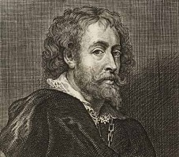

|

Dedication To Jaap Jacobs, Lex Pater, Johannes Magliano-Tromp and Jean-Louis Delattre: My Once and Future Dutch Masters Foreword & Disclaimer This is not a simple article because it contains multiple subjects including: 17th Century European history, High Baroque Art of Northern Europe, the diplomatic arts of the same time and place, Peter Paul Rubens and, last but certainly not least, what are the elements that make up a highly successful Diplomate. Perhaps I should tell you what this article is not: 1) It's not a "how to paint by the numbers" guide; 2) It's not a "how to win at Diplomacy by screwing the other players" treatise; 3) it's not a "how to get rich off of somebody else's labor" memoir and 4) It's not a "coffee table book about exotic food from the Indies." What it is is a short introduction to one of the most fantastic men of the last 500 years who I happen to think would have made a great Diplomate as well as diplomat. Introduction I distinctly remember my first exposure to Rubens more than fifty-five years ago when I saw two of his religious works on display at the San Diego Museum of Art. Then I walked about a hundred yards to my all-time favorite museum, The Timken Museum of Art, and took a look at their one portrait by Rubens. Sort of reminds you of Toby in his younger days when he had hair doesn't it? A few years later I visited the Norton Simon Museum collection of eight Rubens in Pasadena, California, the Getty Museum in Los Angeles twenty-three works by Rubens; and the three works by Rubens in the Los Angeles County Museum of Art. From then on I kept an eye open for his works and because there are so many in so many places it wasn't hard to find them. I especially enjoyed the ones I saw in London, Belgium, Holland, Vienna and Madrid. (The Prado Museum has 30 paintings by Rubens' own hand and another 34 that he contributed to with the help of such artists as Breughel the Elder and his students Snyders and Van Dyck.) My latest exposure to Rubens' work came earlier this year I got to visit the Getty Museum's exhibit "Spectacular Rubens: The Triumph of the Eucharist" which attracted long lines and big crowds during its- three month run. Perhaps a few words of explanation about the title of this article are in order. As far as I know Henry Kissinger is the only dipper who ever became a millionaire by earning his money, although others (John Kerry comes to mind) may have done it by inheritance or marriage. However, I know of only one dipper who became a billionaire by any means. No, it wasn't Toby, or Yann, or Cyrille, or Edi (although he might be close), and it certainly wasn't Allan B. Calhamer. Actually it was a Dutchman and he lived years ago, from 1577 – 1640, during the first half of the Dutch Golden age to be exact. Based on the number of Rubens works (including paintings, drawing, etchings, etc.) still in existence and the prices paid for some of them, I guesstimate the value of all Rubens paintings at about $2.3 billion and all his works at over $3.0 billion. Not bad for a kid who was raised in near poverty. #19. $76.7 million. Massacre of the innocents by Peter Paul Ruben, 1610. Bought by Kenneth Thompson at Sotheby's London, July 2002. The flamboyant and dramatic work by Rubens – though recently some voices discussing its authenticity have been heard could also fight for the title of "most unexpected success": Christie's had estimated its price at a mer" £5 million. Even in his own lifetime Rubens was well paid (When he was paid --- sometimes he had to wait years for full payment for his work.) and his works for Marie de Medici, King Charles, and others brought in the equivalent to millions of today's USD. He began his career and became a diplomat and after a highly successful early career as a real diplomacy "player" he went back to his original career as a painter and proceeded to make his first billion. Today he's well on his way to his third billion, or at least the people who gambled on his success are. I am writing about Peter Paul Rubens, one of the most prolific and profitable painters of all time. He is a role model for what makes a great diplomat or Diplomate, then or now. Rubens can best be remembered as a Renaissance (Northern European Baroque) man: Painter, drawer, etcher, diplomat, family man, business tycoon; and he even managed to stay on good terms with many of the biggest prima donnas of his time. After a bit of discussion of Ruben's life as a painter, diplomat and much more; and a consideration of some of the elements that make up an out-standing diplomat and potential Diplomate I'll tell you who, IMHO, among today's Diplomacy players most resembles Rubens. We should not forget that Rubens did not live in a vacuum. His roots go back to another Renaissance diplomat, statesman, writer, playwright and poet: Niccolo Machiavelli. Rubens' tree had many branches including: Statesman, painter, spy and entrepreneur. Among the leaves on Rubens' tree were his studio assistant Jan Fyt and Rubens' students included Anthony Van Dyck, Lambert Jacobsz, Cornelis de Vos and Simon de Vos. Interestingly, Rembrandt never met or mentioned Rubens, although he emulated him in many ways, right down to building his own house/workshop/museum in Amsterdam. Rembrandt even bought a painting by Rubens. However, the differences in time: Rubens lived from 1577 – 1640 and Rembrandt from 1606 – 1669; place: Rubens was born in Siegen, the North Rhine-Westphalia of Germany and Rembrandt was born in Leiden; Rubens died in Antwerp and Rembrandt died in Amsterdam; and, finally, Rubens was a devout Roman Catholic and Rembrandt most certainly was not. Have you ever considered Diplomacy as an art form? Well, me neither but… At first the idea of an article linking the famous painter Peter Paul Rubens with Diplomacy seemed like a stretch, even for me, but the more I got into it the more I realized I was on to something. What follows is the story of the painter/diplomat who became a billionaire/Diplomate. Peter Paul Rubens As Painter: Part 1 His early education, training as a court page and budding painter led to a visit to Italy where he spent some years as a court painter and he made a number of important diplomatic and artistic contacts, as well as seeing some of the best contemporary Italian masters by Tintoretto and others. He also got to visit several artists' workshops --- an idea he quickly put into practice when he got back to Antwerp. On his return to Antwerp, his career as a court painter blossomed with many commissions for portraits, allegorical and Biblical themed works in a variety of genres. Over the years Rubens created his own workshop and school with various assistants, students, and collaborators that may have numbered as many as eighty at one time. Assistants did the grunge work, mixed paints and prepared canvases. Students did the preliminary and background work on a canvas, collaborators (or specialists) were brought in to do flora and fauna as needed, and Rubens usually supplied the finishing touches. Occasionally, for a special client or a really high fee, Rubens would do the entire project himself. This assembly line process allowed him to turn out some 1,400 paintings in his lifetime, along with hundreds, if not thousands, of drawings and etchings. I've always loved Rubens' paintings. My only regret is that he didn't paint his men the same way he painted his women. Do I need to explain that? Rubens paintings can be divided into many subject types: self-portraits, portraits, allegorical works, religious subjects, historical works, landscapes, etc. Here we will be concerned with his historical paintings, especially those devoted to war, peace and diplomacy; which were commissioned by his rich, famous and powerful patrons, including some of the most important people of his time. Although he often painted his subjects in armor or the big battles, Rubens tended, in his paintings and conduct, subjects that promoted peace; whether it was a true peace treaty being signed, or the reconciliation of a Queen Mother and her wayward King son. Rubens painted over 1,400 works. Some 650 or so are in public display. In addition hundreds of his drawings and etchings have survived. Of the thousands of letters he wrote only a few hundred survive. Rubens lived from 1577 – 1640, during the first half of the Dutch Golden Age, a time of great political and military turmoil in Europe and especially the area we now know as Belgium and The Netherlands, but it was also a time of great economic prosperity and cultural advancement. Van Dyck, Rubens pupil, only lived 42 years and died a year after his teacher. Just as Rubens dominated the first half of the Dutch Golden Age, so Rembrandt dominated the second half. Peter Paul Rubens as Diplomat: Part 1 As Court Painter/Dipper/Spy Rubens began his career as a court painter, grew into a diplomat and spy, and retired before becoming a statesman. His time as a page at court gave him the knowledge, skills and social graces that paved his way for success as a painter and diplomat. (How many Dippers do you know that have highly developed social skills or graces?) For a summary of this time in his life read the Wall Street Journal's review of Mark Lamsters 2009 book, "The Art of Diplomacy – Review of 'Master of Shadows: The Secret Diplomatic Career of the Painter Peter Paul Rubens.' " During his years as a diplomat Rubens served the kings and queens of Spain, France and England; the rulers of many Italian states and, of course, the rulers of the Spanish Netherlands (Belgium) and The Netherlands (Holland). In the beginning Rubens was a delivery boy and messenger for various second-rate rulers in Italy, but by the end of his diplomatic career he was a valued conduit and negotiator between some of the most powerful heads of state and heads of government across Western Europe. How did he do it? Simply by following what I call Peter Paul Rubens' Rules of Diplomacy and Painting; which I can summarize as:
The same qualities that made Rubens a great diplomat could make you a great Diplomate. Cosmopolitan And Savoir faire "... they still yearned for a touch of that cosmopolitan savoir faire which, naively enough, they thought endowed the games of the day ... And the difference between them? " That from Boys' Life, March 1937, page 7. Cosmopolitan refers to the world and savoir faire means knowing the right thing to do in any situation. Diplomat and statesman, Diplomate and Old Fart Know the difference between them:
Expect your just rewards but accept them gracefully Peter Paul Rubens was knighted twice, by Spain and by England. The King of Spain knighted Rubens but kept the sword, giving him instead a modest gold chain. King Charles I of England gave Rubens the sword he knighted him with, a diamond girdle for his hat, and a fancy ring off his own finger. The Infanta Isabella, regent of the Spanish Netherlands, who Rubens served longer than anyone, gave hi m what he most wanted --- she allowed him to retire and sent him home to his beloved city, Antwerp. Clothes Make the diplomat and the Diplomate Rubens wore a sword, hat and expensive lace as symbols of his status but there is no record of him ever using or even drawing his sword in anger. None of his self-portraits ever portrayed him as a painter. Instead he always appeared as a noble gentleman, even in his later years. Remember, a holey t-shirt with pizza sauce stains, baggies, and flip-flops do not make a good Diplomate. Qualities of a Successful Dipper
Rubens' Diplomatic Challenges
Simply put: Rubens wanted peace between the Spanish Netherlands (Belgium), especially Antwerp and its rival Amsterdam, and Holland (The Netherlands); and he was smart enough to realize that to make that happen required peace between Spain and England, and the isolation of France. Merger of East and West Indies Companies The plan to unify the Dutch East and Dutch West Indies Companies would have created the largest naval power in Europe and the world, for that matter. It fell through, much to the joy of Spain, England and France. Peter Paul Rubens as a Diplomacy Variant Inspiration This bit of Dip history goes back to 1989 when I was doing the second year of my Dip Grand Tour. I had set aside a week for the Netherlands (most Americans spend a day or two there at most), but it wasn't enough; and I ended up revisiting the country several times. On that first visit my hosts were Jaap Jacobs, Lex Pater and Johannes Magliano-Tromp. During my visits we shared many a memorable meal but the ones that stand out were: a Mexican dinner in Leiden, a student pub crawl in Delft on St. Nikolaas and an elaborate rijsttafel in Amsterdam. Not as well known - as his dual careers as painter and diplomat is Rubens' role as an inspiration for an early Diplomacy variant known as "Diplomatie Rijsttafel" that Jaap, Lex, some retired Dutch diplomats and former employees of the Dutch East Indies Company created. After a long discussion in Dutch on the menu between Jaap and the waiter, we launched into a hot and heavy discussion of the relative merits of Rubens, Van Dyck and Rembrandt (I had been to the Mauritshuis Museum in The Hague the day before.). As the waiters started bringing out the dishes I noticed Jaap and Lex carefully arranging the dishes on the large table. As each dish arrived from the kitchen Jaap would solemnly pronounce its name, in Dutch of course and Lex would place it in a particular spot. It took me a while to recognize some of the dish/place names but when I realized there were 34 dishes on the table I realized they had created a culinary Diplomacy game! I'll never forget the "Please pass the Budapest," or "May I have some more Portugal, please." From 1602-1945 the Spice Islands or what we today call Indonesia, Dutch East Indies etc. were a Dutch Colony. At one point more than a million Dutchmen were working and living in the area. It was Napoleon who infamously said that "an army marches on its stomach," although I doubt if it dined on Chicken Marengo. Food is also important to diplomats and Diplomates. An analysis of Rubens' paintings devoted to banquets, feasts, parties, ordinary meals and food tells us much about the kind of food Rubens ate. From his letters we know that major banquets and feasts often ran from late afternoon into the evening and even over-night and into the next day; and drinking a pint of bier an hour throughout was not unusual. As I said earlier, Rubens was often paid for his work in spices, so it makes perfect sense that at some point Rubens may even have sampled a rijsttafel or "Indonesian Rice Table". The question is, how do you eat yours? Do you tackle dish by dish, blending with the rice? Do you pick your dishes at random, or do you work your way round in a clockwise direction? Or perhaps, you just dip in and out of the rijsttafel spread savouring your favourites… Today a typical rijsttafel meal costs 15-40 Euros per person; 12 (vegetarian dishes) to 25 (mixed meat and vegetarian) to as many as 40 (80 was the most I ever heard of). Rice, in various forms, is the centerpiece. Everything else comes in "tapas" size or as side dishes. Spices, as you would expect for the Spice Islands, are the center attraction. Nutmeg, mace, clove, black pepper, but also lots of exotic vegetables. Chicken, fish and shrimp were popular meat. At the peak of the demand for spices in Europe, more than a million Dutchmen were living and working in the VOC. In its 60-year tenure in The Netherlands, rijsttafel has grown to occupy a unique space: it's an almost comically broad sampler of Indonesia's vast cuisine, distilled to Dutch specifications, then championed by Indonesians in their adopted homeland and duly welcomed by the locals. "It has become so much a part of who the Dutch are, because of our heritage and history," says Rose. "It's deeply interesting food." This is not deluxe gastronomy. It's wholesome and tasty food. For dessert Rubens, as we did, may have had a dish made of almonds, coconut and Dutch chocolate. It's a dish we know today in America as Peter Paul Mounds. The origin of Peter Paul Mounds: A candy dish made from almonds, coconut and Dutch chocolate (named for Peter Paul Rubens, of course) was invented in 1920. The Peter Paul Mounds Company was founded in 1929 and bought by Hershey's in 1988. (Almond Joy uses milk chocolate and came later.) Still priced under $1 (92 cents to be exact) but the size of a bar has dropped from 4 to 1.7 oz. Originally sold for 5 cents, then a dime, and price can go as high as $1.25. Today there is a pudding mix available in both flavors. Peter Paul Rubens as Painter: Part 2 A lot of people say "Fat is Beautiful," but PPR proved it in his early paintings that were filled with voluptuous and muscular nudes in various biblical, allegorical and historical scenes. In his third period as a painter, following his retirement as a diplomat, Rubens concentrated on pictures of his family and home surroundings, including his country house/castle. There are 189 museums that have 1 or more Rubens paintings in their collections (from his hand, from his workshop, etchings, and drawings). Where are Peter Paul Rubens' paintings, drawings, etchings and letters today? I refer you to the Artcyclopedia web site. Peter Paul Rubens and the Dutch Diplomacy Hobby Today Rubens' languages included Greek, Latin, Italian, French, some English (all the languages of diplomacy), plus his native Flemish and Spanish. Books on diplomacy that influenced Rubens included works by the ancient Greeks and Romans and contemporary Italian and French authors. He even read one of the first newspapers ever published, in Maastricht of all places. His black dots included: England (London), Belgium (Spanish Netherlands), Holland, Italy (Venice, Rome and Naples), Spain, Hapsburg Austria (Vienna), Germany (Kiel and Munich), France (Paris and Brest), Turkey (Istanbul), Vatican, Denmark & Sweden. Three of Rubens' favorite adages were:
Rubens' paintings were the equivalent of today's Diplomates written orders with one big difference --- they were usually perfectly created. Even in something like smoking times have changed. Dutch Masters Cigars, a brand of natural wrapped cigars in the United States, have been around since 1911. Its distinctive packaging features Rembrandt's painting "The Syndics of the Drapers' Guild" (De Staalmeesters). But the above painting only has six Masters. I like the "Anatomy Lesson of Dr. Tulp" because it has seven players, one corpse and the GM. Belgian and Dutch Diplomacy players today are a bit different. You're more likely to find the smokers among them smoking marijuana or puffing on a water pipe in the local Red Light district coffee house. And instead of dignified Dutch Masters diplomats gathered around a table you're more likely to see a group "selfie" filled with grinning, balding, pot-bellied middle-aged Dippers. Rene van Rooijen, Frank Oosterom and Bernard Andrioli are some of the top Dutch players according to the ratings. Today's Dutch Diplomacy hobby is under-going a bit of a revival of late, as a look at their Facebook page shows. So Who Is Today's Peter Paul Rubens Diplomate Alter Ego? After carefully reviewing the list of characteristics and qualities that a successful Diplomate should have and pondering a long and then a short list of possible candidates; I picked Jean-Louis Delattre as Peter Paul Rubens' successor. Delattre's philosophy toward Diplomacy can best be summed up by his famous quotation, "Speak loudly, drive fast and carry a big Glock!" Peter Paul Rubens as Diplomat: Part 2 Peter Paul Rubens was no saint by any means, but compared to most diplomats of his day he had a far stronger sense of "personal ethics" than most due to:
Quotations from Oppenheimer The City of Lights, when he arrived in it, was as old as the Caesars and, with a population of over 300,000 (making it the largest city in Europe), still expanding. A tired but true adage had it that Paris had become 'non urbs, sed orbis' (not a city but a world). At the same time, his motives were pure ("if I saw that the Queen Mother or Monsieurs (the Duke of Orleans) were aiming to cause a break between the two crowns (Spain and France), I should withdraw from this affair"). The nefarious Richelieu had become his target, not a wider war (though as he knew 'Anyone can start a war when he wishes, but he cannot so easily end it.') He said much the same thing about the English king's favorite, the Duke of Buckingham: "Rubens predicted Buckingham's downfall ("as for Buckingham, he is heading for the precipice") but could not foresee that the war begun by Buckingham would be brought to an end largely by his own efforts. Quotations from Magurn
Quotations from Lamster
Afterword I remember years ago on a visit to the Rubens Museum in Amsterdam trying to take a "selfie" (back in the days when nobody knew what a "selfie" was) of myself in front of a (poor) copy of a painting by Peter Paul Rubens. I pulled out a Peter Paul Mounds in one hand and my 35 mm camera in the other. Immediately a security guard was at my side. I explained to him what I was doing. When I finished taking my picture; I turned to the guard and offered him the candy bar. He looked around, saw nobody was watching, and opened it. After a couple of bites he looked at me and said, in words, I've never forgotten: " Some things the Americans do well. I will add making candy to my list," and walked off. Dear Larry: I was delighted to hear from my good friend Wilhelm van Loon about you and your interests in my career as a painter, diplomat, Diplomacy player and gourmet gourmand. However, please note I am only an appreciator of fine food, not a glutton when it comes to its consumption. Only JLD, CS, YC and LJ will appreciate the subtle of that. My favorite Dipper? I don't even know his name. I met him in Leiden at the University. He came up to me in the Academic Hall ; where Ph.D. candidates traditionally defend their thesis under the watchful eyes of portraits of every University rector magnificus dating back to 1575; after I had given a talk on, what else, diplomacy & Diplomacy in 1989 and said, "Dr. Peery, I really enjoyed reading your book on Diplomacy." Ah, I would have given him all my dots at that moment. For More About Peter Paul Rubens Books were an important part of Rubens' life and a key element in his focus on the acquisition of more knowledge. His reading and his library, along with his collection of paintings (both his own and others), drawings, etchings, sculpture, antiquities and "curiosities" formed the basis of his "museum," although that term hadn't been invented yet. He had a large, diverse library; and even traded some of his paintings for books. One he special ordered and had delivered to him when he was traveling was a book on the practice of diplomacy. His friend and publisher Christophe Plantin was a major source for contemporary books and Rubens often paid for them by providing title pages and other art work for the publisher. Books About Rubens: Schrader, Stephanie, Looking East: Ruben's Encounter with Asia, Getty Publications, Los Angeles, 2013. ISBN 978-1-60606-131-2 Rubens in London: Art and Diplomacy [Book] by Gregory Martin, Harvey Miller, Hardback, 205 pages. ISBN 1905375042 The Flemish artist Peter Paul Rubens is probably the most important foreign artist to have worked in England. The story of how this came to be, of what he did and whom he met when he was there, and what he painted for King Charles I is the story of this book. Charles and his father, the first Stuart monarchs of Great Britain, led and promoted a great wave of interest in the arts, in particular the visual arts that culminated in Rubens painting nine large canvases to decorate the ceiling of Inigo Jones's Banqueting Hall, the ceremonial center of the Court in Whitehall, a monument that is still intact today. It is this cycle, an hitherto unappreciated masterpiece of Baroque state art that is the focus of this book. How Rubens obtained the commission is a tale of international politics and diplomacy in which the artist himself played a significant role. The author relates these complex political relationships and missions with great insight and clarity, and in doing so also describes the cultural and social setting in which Rubens found himself while in London. The illustrations that accompany the text include not only many of Rubens's own paintings and drawings made when he was in London, but also some of the now well-known works by the Italian and North European Renaissance masters that Rubens would have seen in the magnificent art collections of the King and the English aristocracy. Foremost however among the illustrations are the reproductions of the Banqueting Hall ceiling itself: these are mostly in colour, showing each of the three central scenes both complete and with striking details that would be difficult to see in the Hall itself. Also the corner oval paintings as well as the long, celebratory, exuberant processions on either side are reproduced in colour and in detail, so that the reader, guided by the author's full descriptions and interpretations, can experience a unique viewing and understanding of Rubens's masterpiece. Published in 2011, this book in paperback sells for $130 and a companion work on the same subject only in more detail sells for $240. The three main works I consulted in researching this article were the following books. The first focuses on Rubens' career as a diplomat. The second is a collection of most of his known letters with commentary. The third is primarily about Rubens career as a painter. Master of Shadows: The Secret Diplomatic Career of the Painter Peter Paul Rubens by Mark Lamster, 2009 The Letters of Peter Paul Rubens Translated and Edited by Ruth Saunders Magurn, 1991 Rubens: A Portrait by Paul Oppenheimer, 1999 The Art of Peter Paul Rubens All of the following paintings can be found on this site devoted to Rubens. Rubens painted at least 26 paintings devoted to war, peace and his diplomatic career; and that's not counting the series he did for Marie de Medici for the Luxembourg Palace, the paintings he did for the ceiling of the Royal Banqueting Hall for King Charles I of England or the incomplete series about Henri IV he started for Marie de Medici.
Peter Paul Rubens Online
Filmography
If you wish to e-mail feedback on this article to the author, and clicking on the envelope above does not work for you, feel free to use the "Dear DP..." mail interface. |